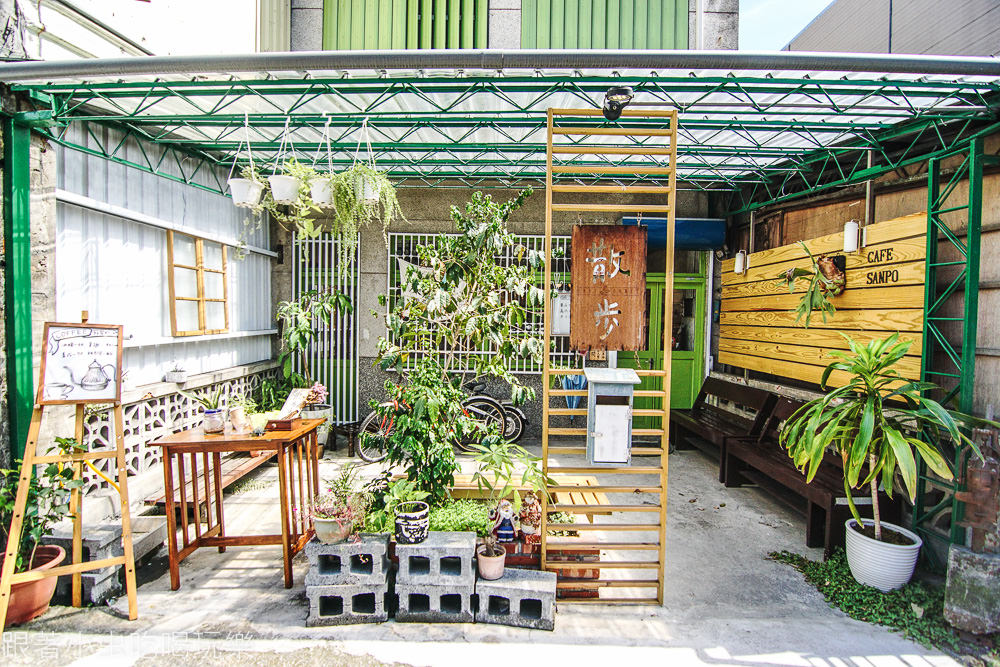

散步咖啡廳
「散步 Cafe Sanpo」在距離宜蘭火車站、客運站不遠的巷子裡，第一次在看見這間老屋咖啡店的照片時，就被文青老宅的獨特的溫度及歲月感吸引住，尤其店裡的咖啡看起來相當專業，蛋糕也非常好看，只是平常都是往羅東、礁溪一帶跑比較多，到宜蘭市區的次數及頻率較低，就一直在口袋名單中擱著，這天正好下午在宜蘭市有約，決定提早跳上客運，先散步來「散步 cafe Sanpo」喝咖啡、吃甜點。

「散步 Cafe Sanpo」在距離宜蘭火車站、客運站不遠的巷子裡，第一次在看見這間老屋咖啡店的照片時，就被文青老宅的獨特的溫度及歲月感吸引住，尤其店裡的咖啡看起來相當專業，蛋糕也非常好看，只是平常都是往羅東、礁溪一帶跑比較多，到宜蘭市區的次數及頻率較低，就一直在口袋名單中擱著，這天正好下午在宜蘭市有約，決定提早跳上客運，先散步來「散步 cafe Sanpo」喝咖啡、吃甜點。